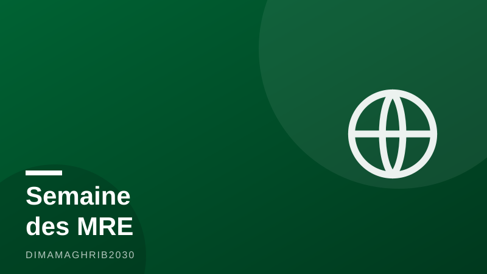

MRE : la Semaine de l'investissement (10-13 août) veut transformer 61 milliards de transferts en projetsMorocco Bets on Its Diaspora: Investment Week Aims to Turn Summer Homecomings Into Business Ventures

Chaque été, ils reviennent par centaines de milliers. Cette année, le Maroc veut qu'ils repartent avec plus qu'un bronzage : un projet d'investissement. Du 10 au 13 août 2026, la deuxième édition de la Semaine de l'Investissement des Marocains du Monde mobilise l'ensemble des douze Centres Régionaux d'Investissement (CRI), avec un coup d'envoi donné notamment à Dakhla-Oued Eddahab, rapportent Aujourd'hui le Maroc et Innovant Magazine. L'objectif est assumé : profiter de la saison Marhaba, ce grand retour estival de la diaspora, pour convertir des expéditeurs de fonds en investisseurs régionaux.
Les chiffres expliquent l'ambition. Selon Libération, les transferts des MRE ont atteint 61,48 milliards de dirhams à fin juin, en hausse de 9,9 %. Une manne considérable, mais qui finance encore majoritairement la consommation des familles et l'immobilier. La Semaine investissement MRE 2026 veut réorienter une partie de ce flux vers l'économie productive, au moment où les investissements directs étrangers nets s'envolent à 26,16 milliards de dirhams à fin juin, soit un bond de 31,5 %, d'après La Vérité.
Quatre jours, douze régions, un guichet unique
Concrètement, du 10 au 13 août, chaque CRI ouvre grand ses portes aux Marocains du monde de passage dans leur région d'origine. Au menu, selon Aujourd'hui le Maroc : accueil personnalisé, journées portes ouvertes, ateliers pratiques et rendez-vous individuels pour examiner la faisabilité d'un projet, identifier le foncier disponible, décrypter les incitations de la nouvelle charte de l'investissement et enclencher les démarches administratives. C'est tout l'enjeu du CRI Maroc accompagnement projet : offrir un interlocuteur unique là où l'investisseur de la diaspora se heurtait hier à un maquis de guichets.
Pour un MRE qui veut passer à l'acte cette semaine, le mode d'emploi est simple : se présenter au CRI de sa région avec une idée, même embryonnaire, et ses documents d'identité. Les équipes aident à structurer le projet, à monter le dossier et à l'orienter vers les dispositifs de financement et de soutien existants. Ceux qui ne peuvent se déplacer peuvent passer par les plateformes numériques des centres régionaux.
Un momentum national à saisir
La fenêtre est d'autant plus favorable que l'État met les bouchées doubles. L'investissement public atteint en 2026 un niveau record de 380 milliards de dirhams, soulignent BourseNews et Finances News Hebdo, porté par les grands chantiers d'infrastructures, la perspective de la Coupe du monde 2030 et la montée en puissance des régions. Pour les Marocains du monde, investissement rime désormais avec opportunité territoriale : tourisme à Dakhla, industrie à Tanger, agroalimentaire dans le Souss, services numériques à Casablanca ou Rabat.
De l'émotion au business plan
Reste le vrai défi : transformer l'attachement affectif en engagement économique durable. Investir au Maroc quand on est MRE suppose de la confiance dans la justice, le foncier et la stabilité des règles. La première édition de la Semaine avait posé les bases ; la deuxième doit prouver que les projets signés se concrétisent. Si les 61 milliards de transferts MRE ne deviennent pas tous des usines ou des startups, chaque point de pourcentage réorienté vers l'investissement productif représenterait des centaines de millions de dirhams injectés dans les régions. Cette semaine, du 10 au 13 août, la porte est ouverte. Aux Marocains du monde de la franchir.
Every summer they come home by the hundreds of thousands. This year, Morocco wants them to leave with more than family memories: a signed investment project. From August 10 to 13, 2026, the second edition of the Investment Week for Moroccans of the World mobilizes all twelve of the country's Regional Investment Centers (CRI), with launch events held notably in the southern region of Dakhla-Oued Eddahab, according to Aujourd'hui le Maroc and Innovant Magazine. The timing is no accident. The event lands squarely in the middle of the Marhaba season, the massive summer homecoming, and its ambition is explicit: convert money-senders into regional investors.
The numbers explain the stakes. Moroccan diaspora remittances reached 61.48 billion dirhams by the end of June 2026, up 9.9 percent year on year, the daily Libération reports. That flow, roughly 6 billion dollars in half a year, still overwhelmingly funds household consumption and real estate. Meanwhile, net foreign direct investment jumped 31.5 percent to 26.16 billion dirhams over the same period, according to La Vérité. The gap between what the diaspora sends and what it invests is precisely what this week is designed to close, making Morocco diaspora investment a national economic priority rather than a slogan.
Four Days, Twelve Regions, One Front Door
In practical terms, from August 10 to 13, every one of the twelve regional investment centers Morocco operates will open its doors to diaspora members visiting their home regions. Aujourd'hui le Maroc reports that the program includes open-house days, practical workshops and one-on-one meetings where CRI advisers help assess a project's feasibility, identify available land, walk through the incentives of the new investment charter and kick off administrative procedures. It is a deliberate answer to the diaspora's oldest complaint: the bureaucratic maze that once required a dozen different offices now runs through a single counter.
For a Moroccan living abroad who wants to act this week, the playbook is simple. Show up at the CRI of your region with an idea, even a rough one, and your identity documents. Advisers help structure the project, assemble the file and route it toward existing financing and support schemes. Those who cannot travel can go through the centers' digital platforms.
A Record Year to Ride
The window could hardly be more favorable. Public investment hits a record 380 billion dirhams in 2026, BourseNews and Finances News Hebdo note, driven by infrastructure megaprojects, preparations for the 2030 World Cup and a broad push to empower the regions. For diaspora entrepreneurs, that translates into concrete regional openings: tourism in Dakhla, industry around Tangier, agribusiness in the Souss, digital services in Casablanca and Rabat. Riding a public-spending wave of this size is the kind of tailwind private projects rarely get.
From Emotion to Business Plan
The real test lies beyond the week itself. Turning emotional attachment into durable economic commitment requires trust in courts, land registries and stable rules, the very concerns diaspora investors cite most often. The first edition of Investment Week laid the groundwork; the second must prove that projects announced in August become factories, farms and startups by next summer. Not all of the 61 billion dirhams in transfers will ever become productive capital. But every percentage point redirected toward investment would inject hundreds of millions of dirhams into Morocco's regions. From August 10 to 13, the door is open. The diaspora only has to walk through it.